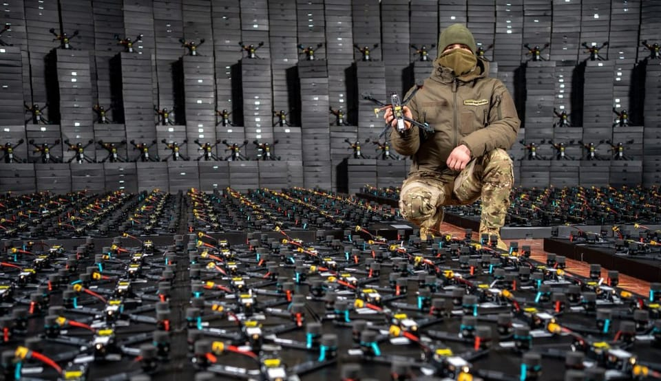

世界苦茶04月13日新闻 | 32条 | 川普豁免包含中国的电子产品关税

川普豁免包含中国的电子产品关税 | 川普将提供芯片关税战信息 | 乌克兰成为全球领先的FPV生产国 | 美国伊朗首轮直接谈判
苦茶数据
美元兑人民币：7.28（昨日7.28，前日7.32）
美元兑日元：143.59（昨日143.69，前日146.93）
上证指数：休市（昨日3238，前日3243）
标普500指数：休市（昨日5368，前日5268）
比特币：84744（昨日83564，前日80778）
布伦特原油：64.76（昨日63.86，前日64.96）
中国新闻
• C909完成老挝首航 ：中国国产商用飞机C909在星期六完成老挝首航。综合央视新闻和澎湃新闻报道，由老挝航空C909飞机执飞的QV331航班星期六从老挝万象瓦岱国际机场起飞，于早上11时17分顺利抵达巴色国际机场，完成首次商业飞行。这架飞机是上个月由中国商飞公司向老挝航空公司交付的首架C909飞机，也是中国的喷气式客机首次进入老挝市场。
• 林定国谈国安与爱国教育 ：香港律政司长林定国说，当有国家唯我独尊，为了追求自身最大国家利益，不惜以霸道欺凌手段损害其他国家人民利益，香港应该沉着应对，维持和巩固开放、多元化社会。综合香港01和文汇网报道，林定国星期六出席由香港教育大学与油尖旺民政事务处及油尖旺区校长会合办的“国家安全教育与爱国主义教育”研讨会暨国安教育多媒体设计比赛颁奖礼时致辞说，十分认同将国家安全教育与爱国主义教育挂钩，两者关系密切。林定国说，国家安全教育不单是传授有关维护国家安全，包括国家安全法律的相关知识，更重要是培养民众对维护国家安全，以及遵守国家安全法律的自觉性。他认为，这种自觉性是会自然随着爱国情怀而产生的，因此若能做好爱国主义教育，国家安全教育必将事半功倍、水到渠成。
• 金砖会呼吁反单边主义 ：金砖国家过去两天召开经贸联络组会议时强调，要共同反对单边主义和贸易保护主义。据中国商务部官网消息， 2025年金砖国家经贸联络组第二次会议星期四至五以视频形式举行。金砖成员在会上就美对等关税政策深入交换意见，对相关措施引发的贸易紧张局势表示严正关切，并呼吁共同反对单边主义和贸易保护主义。中方指出，美国政府近期推出对等关税政策，严重破坏国际贸易体系，扰乱全球产业链供应链，对世界经济造成持续冲击，是典型的单边主义、保护主义和经济霸凌行径。在此特殊时期，金砖成员更要坚持全球化的正确方向，共同维护以规则为基础的多边贸易体制，维护全球经济稳定。
• 中远海运起诉秘鲁港管控 ：在秘鲁国家保护竞争和知识产权协会裁定，要管控钱凯港的使用费，拥有该港独家经营权的中国航运国企中远海运表示，将就此启动法律诉讼。据路透社报道，中远海运星期五在声明中透露上述消息，并强调钱凯港具有市场竞争力。该公司补充称，秘鲁国家港务局也曾认可钱凯港的竞争实力。秘鲁运输部星期四称，在上述协会裁定钱凯港运营缺乏足够竞争力后，该部将管控钱凯港的使用费。
• 台防部通报解放军动态 ：台湾国防部通报，过去24小时侦获34架次中国大陆军机在台海周边活动。台湾国防部星期六在官网通报，从星期五上午6时至星期六上午6时为止，当局侦获大陆军机34架次及大陆军舰七艘，持续在台海周边活动。台军运用任务机、舰及岸置导弹系统严密监控与应处。根据台国防部发布的解放军进入台海空域活动示意图，从星期五上午6时至下午2时55分为止，发现大陆战斗机、轰炸机、辅战机及无人机计八架次在台湾北部及东部空域活动，其中七架次曾跨越中线进入台北部及东部空域。从星期五上8时25分至下午5时30分为止，发现大陆战斗机、轰炸机、辅战机及无人机计26架次在面向大陆的台海空域活动，其中12架次逾越海峡中线。
• 中日韩信息通信部长会重启 ：时隔七年，中日韩信息通信部长会议星期五在苏州重启。据中国工业和信息化部网站消息，第七次中日韩信息通信部长会议星期五在中国苏州举行。中国工业和信息化部副部长张云明、日本总务省总务审议官今川拓郎、韩国科技和信息通信部副部长姜度贤分别率团出席会议。中日韩合作秘书处秘书长李熙燮也出席会议。这次会议是继2018年三国在日本东京举行第六次中日韩信息通信部长会议后，时隔七年重启。会议落实三国领导人重要共识，就三国信息通信领域政策与实践、下一代信息通信技术和数字技术创新应用等领域合作深入交换意见，达成广泛共识。
• 终审法院法官范礼全辞职 ：香港司法机关通报，终审法院澳大利亚籍非常任法官范礼全已辞任。据香港政府公报，司法机构星期五回应传媒查询时说，终审法院非常任法官范礼全已向香港特首李家超递交辞呈。范礼全在请辞时重申，他一直敬重终审法院所有法官的独立性和诚信。在范礼全离任后，终审法院共有九名非常任法官，包括四名非常任香港法官，以及五名来自英国和澳洲的非常任普通法法官。司法机构会继续物色本地和海外的合适人选出任非常任法官。
• 日战机应对中方无人机增多 ：日本防卫省公布的最新数据显示，日本战机去年紧急升空应对中国军方无人机的次数同比增加逾两倍。综合放送协会和共同社等日媒报道，日本防卫省统合幕僚监部星期四公布的数据显示，日本自卫队战机2024年度针对可能侵犯领空的外国飞机实施704次紧急升空，比上一年度增加35次。数据也指出，按照国家和地区来看，包括推定结果在内，针对中国飞机464次、俄罗斯飞机237次。针对中俄两国飞机紧急升空次数占整体99%，其中针对中国军方无人机紧急升空次数则为23次，是上一年度八次的逾两倍。
• 中西签署电影合作备忘录 ：中国和西班牙签署电影合作文件，深化电影领域的交流合作，在互映影片、合作摄制等方面拓展务实合作。据中国国家电影局网站消息，在西班牙首相桑切斯访华之际，中宣部副部长、中央广播电视总台台长慎海雄与西班牙外交大臣阿尔瓦雷斯，星期五在北京签署《中华人民共和国国家电影局和西班牙王国电影与视听艺术局关于电影合作的谅解备忘录》。中国总理李强与桑切斯见证了合作文件的签署。中国是全球第二大电影市场。根据备忘录内容，中国和西班牙将进一步深化电影领域的交流合作，在参加节展、互映影片、合作摄制、人员往来等方面拓展务实合作，为推动两国人文交流和双边关系高水平发展注入新动力。
亚太印太新闻
• 台湾民进党爆间谍案 ：在台湾执政的民进党内部人员接连被曝涉嫌向中国大陆泄密后，台湾资深媒体人、前中广董事长赵少康呼吁总统赖清德应好好清党，揪出潜伏者，而不是天天杯弓蛇影，怀疑陆配和在野立委。台湾国安会秘书长吴钊燮在担任外交部长期间的助理何仁杰涉嫌大陆间谍案，于本周被羁押禁见。赵少康星期六在脸书发文说，立法院前院长游锡堃前助理盛础缨、前总统府谘议吴尚雨、民进党民主学院前副主任邱世元、民进党议员李余典的特助黄取荣都因涉嫌中国大陆间谍案被查办，现在又加上何仁杰，“民进党政府高层到底潜伏了多少共谍？窃取了多少重要的国家机密？”
• 吴钊燮回应助理涉谍案 ：台湾国安会秘书长吴钊燮担任外长时的助理何仁杰涉大陆间谍案被羁押后，吴钊燮回应称，何仁杰去年3月已离职。综合台湾《上报》《联合报》报道，台湾检调单位在审查总统府前总统办公室咨议吴尚雨涉及大陆间谍案时，查出曾在吴钊燮担任外长时，担任其助理的何仁杰也疑似被吸收为大陆间谍。台北地检署认定何仁杰涉嫌将外交部机密资料提供给中国大陆情治人员，于星期四展开搜索行动，并拘提何仁杰到案，随后以他涉犯《国安法》等罪嫌重大，且有串证、灭证之虞，向台北地方法院声押获准。
• 越南加强防范洗产地 ：为了避免受到美国惩罚性关税的冲击，越南据报正准备加强打击中国产品在其领土“洗产地”以规避美国关税的做法，并强化对出口至中国的军民两用商品的管控。据路透社报道，自从美国总统特朗普上任以来，许多跨国企业实施“中国加一”策略，将部分产能迁往越南以降低对华依赖；同时，也有不少中国企业为了规避美国关税，在越南设厂向美国客户供货。在多数情况下，越南工人会对这些商品进行加工后再合法地以“越南制造”标签出口至美国。还有知情人士说，有时运输中国商品的船只仅在越南港口短暂停留，取得“越南制造”的证明后就出港。
财经新闻
• 特朗普称将于周一提供更多有关额外芯片关税的具体信息： 美国总统唐纳德·特朗普周六表示，他将于下周一就其政府对半导体关税的立场提供最新信息。特朗普在空军一号上对记者说：“我将在周一给你们答案”。此前有消息称，特朗普将很快下令对半导体进口的国家安全影响进行研究，即“第 232 条研究”，结果可能导致额外关税。
• 黑石总裁警告关税风险 ：美国黑石集团总裁格雷说，全球关税政策的长期不确定性可能加剧市场混乱，他还警告，美国总统特朗普的贸易举措可能波及金融体系。彭博社报道，格雷星期四在乔治城大学主办的一场活动上说，市场波动加剧的时间越长，出现问题并引发多米诺骨牌效应的可能性就越大。他说，市场动荡可能会暴露交易对手风险和杠杆作用的意外后果。若能尽快解决当前的不确定性，将对市场产生积极作用。
• 英国禁带欧盟肉乳制品 ：为防止口蹄疫疫情，英国从星期六起禁止旅客因个人用途从所有欧盟国家携带肉类和乳制品入境英国。新华社报道，英国政府星期五发布公报说，从星期六起，旅客将不能因个人用途携带来自欧盟国家的牛肉、羊肉和猪肉以及乳制品，包括三明治、奶酪、腌制肉类、生肉或牛奶等产品进入英国。无论这些物品是否有包装，或是否在免税店购买。公报说，违反这项禁令将被视为违法行为，相关违禁品将被没收或销毁。在英格兰，持有这些物品的人将可能面临最高5000英镑的罚款。
• 中国稀土出口受限 ：中国对稀土矿物实施出口限制后，国内生产商面临更严格的出口许可要求，导致稀土出口几乎陷入停滞。综合彭博社和路透社报道，为了反制美国挥舞的关税大棒，中国政府上星期五宣布限制七种稀土及相关材料的出口，包括钐、钆、铽、镝、镥、钪、钇等。这些材料广泛用于国防、能源及电动车等高科技领域。在新限制的影响下，如今出口商要出口上述材料，必须向中国商务部申请出口许可证，但这一流程较为不透明，审批时间通常需时六至七周，甚至可能需要更长时间。
• 碧桂园债务重组进展 ：中国房企碧桂园在新的境外债重组方案中调整了纳入重组范畴的境外债金额后，该方案已获得持有债券债务30%的债券人支持。综合澎湃新闻、彭博社和路透社报道，碧桂园星期五在香港交易所提交的公告称，公司已与专案小组协议重组建议的主要条款，持有现有债券债务本金总额29.9%的小组成员已签署重组支持协议。这一支持比例距离碧桂园计划通过“协议安排”程序、在香港法院推进重组所需的75%支持仍有不小差距。
• 中国设限每日净卖出额度 ：美国对中国挥舞关税大棒后，中国据报已对对冲基金和大型散户投资者每日净卖出的股票金额设定上限。知情人士星期五向路透社透露，上海和深圳证券交易所通过口头警告传达的软性上限是，对冲基金和大型散户投资者每日净卖出股票的金额不得超过5000万元人民币。两名券商人士说，若投资者未遵守上述限额，他们的交易账户可能会被交易所暂停使用。
• 美新关税推高汽车成本 ：美国汽车研究中心的分析显示，特朗普在4月初实施了25%汽车关税，美国汽车制造商在2025年成本负担将因此增加约1080亿美元。总部位于密歇根州安娜堡的美国汽车研究中心星期四发布的最新报告说，底特律的汽车制造商，包括福特汽车、通用汽车以及斯泰兰蒂斯的成本将因新的汽车关税措施增加420亿美元。这三大车企每在美国本土生产一辆车，将为所用的进口零部件平均承担近5000美元的关税，而每进口一辆车则平均须缴纳约8600美元的关税。特朗普的25％汽车关税于4月3日生效，由于美国汽车厂商用的汽车零部件来自世界各地，此举对整个美国汽车行业造成了冲击。
• 特朗普称关税政策成功 ：全球两个最大经济体的贸易战正愈演愈烈，但在中国宣布将美国商品的关税税率提高至125%后，美国总统特朗普依然坚称他的关税政策“非常好”。综合《纽约时报》和法新社报道，中国官方星期五宣布，将从星期六起，对所有美国输华商品加征125%关税，以反制美国对华的加征关税措施。中国的报复行动加深全球市场的担忧。美国国债收益率星期五大幅飙升，表明中美贸易战动摇世界对美国经济的信心，许多投资者似乎正转向德国国债以躲避风险。与此同时，股市方面，标准普尔500指数收盘上涨，收复上周特朗普首次宣布全面征收全球关税后大幅下跌的部分失地。
• 美关税豁免电子产品 ：美国海关与边境保护局4月11日发布更新，豁免智能手机、电脑、半导体器件等进口电子产品的“对等关税”，适用对象包括中国。通知未说明豁免的原因。白宫也没有立即回复置评请求。
• 美关税豁免系统故障 ：美国海关和边境保护局发布警报，告知用户处理货运关税豁免的系统出现故障。中国新闻社引述美国消费者新闻与商业频道的报道说，警报指出，星期五出现的故障持续了十多个小时，后来恢复运行。受影响的货运包括处于特朗普政府实施的90天关税暂停期内的国家的所有贸易货物。报道称，对于忙于处理不确定性和担心贸易混乱的美国进口业者和供应链来说，此次故障为最新的打击，也令人质疑海关能否顺利执行新政策和征收关税。海关建议申报人单独提交货物放行单，并在问题解决后进行汇总申报。
俄乌战争
• 美特使与普京会晤谈乌局势 ：美国中东问题特使威特科夫星期五到圣彼得堡与俄罗斯总统普京进行会谈，集中讨论结束俄乌战争的问题。同日，美国总统特朗普再次呼吁普京“快点行动”，结束这场战争。克里姆林宫发布消息说，会谈以闭门形式举行，内容涉及解决乌克兰问题的诸多方面。路透社称，威特科夫和普京讨论四个多小时，会谈至晚上才结束。塔斯社报道，威特科夫当晚就搭乘飞机离开圣彼得堡。
• 中方称中籍雇佣兵无政府关联 ：熟悉美国情报的两名美国官员和一名前西方情报官员披露，100多名为俄罗斯在乌克兰作战的中国公民是雇佣兵，似乎与中国政府没有直接关联。不过，前西方情报官员告诉路透社，中国军事人员在北京的批准下曾进入俄罗斯战线后方基地，以从战争中吸取战术经验。要求不具名的两名美国官员说，中国战斗机似乎只参与最低限度的训练，对俄罗斯的军事行动没有任何明显影响。另外，美国驻印太司令部司令帕帕罗星期三证实，乌克兰军队在乌克兰东部抓获两名华裔男子。乌克兰总统泽连斯基日前说，乌克兰掌握155名中国公民在乌克兰东部为俄罗斯作战的信息。
• 路透社称中国军官在北京批准下进入俄罗斯防线后方： 据路透社4月11日报道，两名熟悉情报的美国官员和一名前西方情报官员称，在乌克兰与俄罗斯军队并肩作战的100多名中国公民是雇佣兵，似乎与北京没有直接联系。这些不愿透露姓名的美国官员称，这些士兵训练不足，在战场上几乎没有发挥任何作用。他们认为中国政府并未正式部署这些士兵。然而，这位前情报官员告诉路透社，中国军官在北京批准下进入俄罗斯防线后方，观察并吸取战争中的战术教训。
• 乌克兰成为全球领先的FPV无人机生产国，产量超过220万架： 4月11日，在基辅举行的乌克兰武器2024论坛上，国防高级官员表示，乌克兰已成为全球最大的FPV无人机生产国，产量超过220万架，并正在迅速扩大其国防工业基础，以满足现代战争的需求。UNITED24媒体记者也出席了此次论坛。“我不会重复我的同事已经说过的关于这一增长是如何实现的，”乌克兰武器委员会董事会成员、核研究理事会协会主席、为乌克兰武装部队开发无人机的Tencore LLC公司联合创始人兼首席执行官马克西姆·瓦西连科说道。“但众所周知，我们现在是全球第一大FPV无人机生产国。我们已经生产了超过220万架无人机，并且已经开始了350亿美元的投资和合同谈判。这是我们必须继续追求的目标。”
其他新闻
• 土耳其谴责以色列空袭 ：土耳其总统埃尔多安说，土耳其不会容忍任何将叙利亚陷入不稳定的企图。新华社报道，埃尔多安星期五到南部城市安塔利亚出席第四届安塔利亚外交论坛开幕式并发表主旨讲话。他在讲话中谴责以色列最近对叙利亚发动的空袭，指以色列威胁到地区和平与稳定。他还指称以色列试图在叙利亚内部煽动宗派和种族冲突。
• 美伊首轮谈判气氛友好 ：美国和伊朗的首轮间接谈判4月12日在阿曼首都马斯喀特进行。会谈进行两个多小时。据报美国中东问题特使威特科夫和伊朗外交部长阿拉格齐曾短暂交流。伊朗外交部长阿拉格齐称，双方交换了四轮信息，双方均希望尽快达成协议，但这并不容易。阿拉格齐还宣布下一轮会谈将于4月19日进行。阿拉格齐将此次会面称为“简短的初步对话、问候和礼貌的交流”，这似乎是为了避免引起伊朗强硬派的愤怒。负责传达双方观点的阿曼外交大臣巴德尔表示，美伊两国“有一个共同的目标，即达成一项公平且具有约束力的协议”。此次接触氛围友好，有利于弥合观点并最终实现区域和世界和平、安全和稳定。
• 欧盟拟建联合防务基金 ：欧洲联盟各国财长就一项联合防务基金展开谈判。该基金将用于购买和拥有国防装备，并向成员国收取使用费，以便在不增加债务负担的情况下增加国防支出。这项名为“欧洲防务机制”的基金是由布鲁盖尔智库在一份提交给部长级会议的文件中提出的，旨在解决高负债国家如何支付昂贵军事装备费用的担忧。这是欧洲为应对俄罗斯可能发动的袭击而做出的更广泛努力之一，因为欧盟各国政府意识到，它们的安全保障不能再完全依赖美国。
• 美国启动REAL ID新规 ：美国机场将从5月7日起实施拖延20年的更严格身份证规定，不符合规定的人可能被拒绝登机。路透社报道，美国运输安全管理局星期五宣布，从5月7日起，TSA将不再接受不符合REAL ID的州政府签发身份证。美国国会于2005年批准更严格的新联邦身份证签发标准，但执行这项新标准的日期一再被推迟。
• 希腊铁路公司总部爆炸 ：希腊铁路公司总部位于雅典市区的办公室星期五晚上发生爆炸，目前暂无人员受伤报告。当地媒体认为，这是一起有预谋的暴力事件。希腊官方通讯社雅通社报道，在爆炸发生前，有匿名男子给当地报纸和网站打电话，称炸弹被放置在希腊铁路公司总部外，并将在35分钟至40分钟后爆炸。另据希腊国家广播公司报道，警方接到报警后迅速封锁交通并对现场人员进行疏散。当天晚上9时30分左右，希腊铁路公司总部办公室外传出巨大爆炸声响，附近建筑物窗户被震碎。